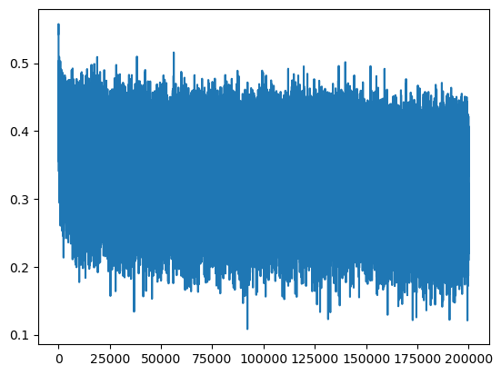
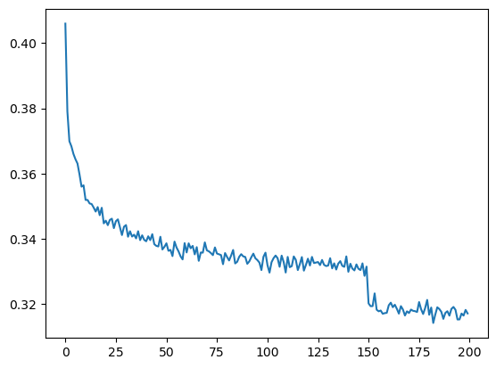
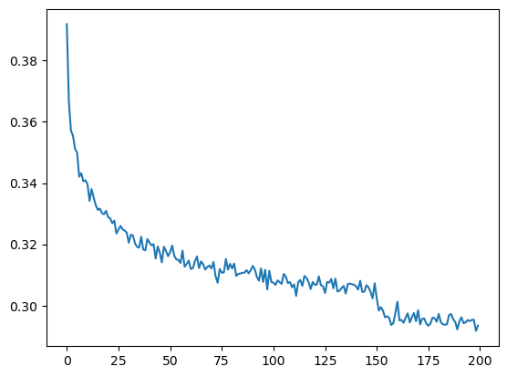
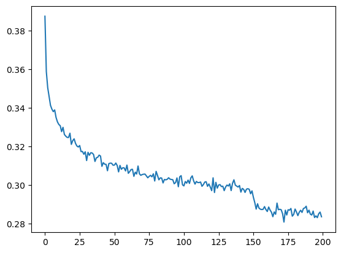

import numpy
import torch
import torch.nn.functional as F
import matplotlib.pyplot as plt # for making figuresBuilding a WaveNet
Starter Code
Imports
Read words
words = open('../data/names.txt', 'r').read().splitlines()
print(len(words))
print(max(len(w) for w in words))
print(words[:8])32033
15
['emma', 'olivia', 'ava', 'isabella', 'sophia', 'charlotte', 'mia', 'amelia']Build vocabulary of characters and mapping to/from integers
chars = sorted(list(set(''.join(words))))
stoi = {s: i + 1 for i, s in enumerate(chars)}
stoi['.'] = 0
itos = {i: s for s, i in stoi.items()}
vocab_size = len(itos)
print(itos)
print(vocab_size){1: 'a', 2: 'b', 3: 'c', 4: 'd', 5: 'e', 6: 'f', 7: 'g', 8: 'h', 9: 'i', 10: 'j', 11: 'k', 12: 'l', 13: 'm', 14: 'n', 15: 'o', 16: 'p', 17: 'q', 18: 'r', 19: 's', 20: 't', 21: 'u', 22: 'v', 23: 'w', 24: 'x', 25: 'y', 26: 'z', 0: '.'}
27Shuffle words
import random
random.seed(42)
random.shuffle(words)Build the dataset
block_size = 3 # context length: how many characters do we take to predict the next one?
def build_dataset(words):
X, Y = [], []
for w in words:
context = [0] * block_size
for ch in w + '.':
ix = stoi[ch]
X.append(context)
Y.append(ix)
context = context[1:] + [ix]
X = torch.tensor(X)
Y = torch.tensor(Y)
print(X.shape, Y.shape)
return X, Y
n1 = int(0.8 * len(words))
n2 = int(0.9 * len(words))
Xtr, Ytr = build_dataset(words[:n1])
Xdev, Ydev = build_dataset(words[n1: n2])
Xte, Yte = build_dataset(words[n2:])torch.Size([182625, 3]) torch.Size([182625])
torch.Size([22655, 3]) torch.Size([22655])
torch.Size([22866, 3]) torch.Size([22866])for x, y in zip(Xtr[:20], Ytr[:20]):
print(''.join(itos[ix.item()] for ix in x), '-->', itos[y.item()])... --> y
..y --> u
.yu --> h
yuh --> e
uhe --> n
hen --> g
eng --> .
... --> d
..d --> i
.di --> o
dio --> n
ion --> d
ond --> r
ndr --> e
dre --> .
... --> x
..x --> a
.xa --> v
xav --> i
avi --> eNeural Network
class Linear:
def __init__(self, fan_in, fan_out, bias=True):
self.weight = torch.randn((fan_in, fan_out)) / fan_in ** 0.5 # note: kaiming init
self.bias = torch.zeros(fan_out) if bias else None
def __call__(self, x):
self.out = x @ self.weight
if self.bias is not None:
self.out += self.bias
return self.out
def parameters(self):
return [self.weight] + ([] if self.bias is None else [self.bias])class BatchNorm1d:
def __init__(self, dim, eps=1e-5, momentum=0.1):
self.eps = eps
self.momentum = momentum
self.training = True
# parameters (trained with backprop)
self.gamma = torch.ones(dim)
self.beta = torch.zeros(dim)
# buffers (trained with a running `momentum update`)
self.running_mean = torch.zeros(dim)
self.running_var = torch.ones(dim)
def __call__(self, x):
# calculate the forward pass
if self.training:
xmean = x.mean(0, keepdim=True)
xvar = x.var(0, keepdim=True)
else:
xmean = self.running_mean
xvar = self.running_var
xhat = (x - xmean) / torch.sqrt(xvar + self.eps)
self.out = self.gamma * xhat + self.beta
# update the buffers
if self.training:
with torch.no_grad():
self.running_mean = (1 - self.momentum) * self.running_mean + self.momentum * xmean
self.running_var = (1 - self.momentum) * self.running_var + self.momentum * xvar
return self.out
def parameters(self):
return [self.gamma, self.beta]class Tanh:
def __call__(self, x):
self.out = torch.tanh(x)
return self.out
def parameters(self):
return []torch.manual_seed(42);n_embd = 10 # the dimensionality of the character embedding vectors
n_hidden = 200 # the number of neurons in the hidden layer of the MLP
C = torch.randn((vocab_size, n_embd))
layers = [
Linear(n_embd * block_size, n_hidden, bias=False), BatchNorm1d(n_hidden), Tanh(),
Linear(n_hidden, vocab_size)
]
# parameter init
with torch.no_grad():
layers[-1].weight * 0.1 # last layer make less confident
parameters = [C] + [p for layer in layers for p in layer.parameters()]
print(sum(p.nelement() for p in parameters))
for p in parameters:
p.requires_grad = True12097Training
# same optimization as last time
max_steps = 200_000
batch_size = 32
lossi = []
for i in range(max_steps):
# minibatch construct
ix = torch.randint(0, Xtr.shape[0], (batch_size,))
Xb, Yb = Xtr[ix], Ytr[ix]
# forward pass
emb = C[Xb] # embed the characters into vectors
x = emb.view(emb.shape[0], -1) # concatenate the vectors
for layer in layers:
x = layer(x)
loss = F.cross_entropy(x, Yb)
# backward pass
for p in parameters:
p.grad = None
loss.backward()
# update: simple SGD
lr = 0.1 if i < 150_000 else 0.01 # step learning rate decay
for p in parameters:
p.data += -lr * p.grad
# track stats
if i % 10_000 == 0:
print(f'{i:7d}/{max_steps:7d}: {loss.item(): .4f}')
lossi.append(loss.log10().item()) 0/ 200000: 3.4915
10000/ 200000: 2.2179
20000/ 200000: 2.3681
30000/ 200000: 2.1342
40000/ 200000: 2.4067
50000/ 200000: 2.2406
60000/ 200000: 1.9608
70000/ 200000: 1.9236
80000/ 200000: 2.6588
90000/ 200000: 2.0502
100000/ 200000: 2.2596
110000/ 200000: 1.6270
120000/ 200000: 2.1705
130000/ 200000: 2.2806
140000/ 200000: 2.1980
150000/ 200000: 1.8434
160000/ 200000: 1.8251
170000/ 200000: 2.3077
180000/ 200000: 2.0817
190000/ 200000: 2.1585plt.plot(lossi)
Eval Mode
# put layers into eval mode (needed for batchnorm especially)
for layer in layers:
layer.training = False# evaluate the loss
@torch.no_grad() # this decorator disables gradient tracking inside pytorch
def split_loss(split):
x, y = {
'train': (Xtr, Ytr),
'val': (Xdev, Ydev),
'test': (Xte, Yte)
}[split]
emb = C[x]
x = emb.view(emb.shape[0], -1)
for layer in layers:
x = layer(x)
loss = F.cross_entropy(x, y)
print(split, loss.item())
split_loss('train')
split_loss('val')NameError: name 'C' is not definedSample from model
for _ in range(20):
out = []
context = [0] * block_size # initialize with all ...
while True:
# forward pass the neural net
emb = C[torch.tensor([context])] # (1, block_size, n_embd)
x = emb.view(emb.shape[0], -1)
for layer in layers:
x = layer(x)
logits = x
probs = F.softmax(logits, dim = 1)
# sample from the distribution
ix = torch.multinomial(probs, num_samples = 1).item()
context = context[1:] + [ix]
out.append(ix)
# if we sample the special '.' token, break
if ix == 0: break
print(''.join(itos[i] for i in out))ivon.
fanili.
thoommestenell.
mattevyn.
alana.
joleshaun.
siah.
prus.
carleen.
jah.
jorrena.
joriah.
jas.
vishylaharia.
juna.
vio.
orven.
mina.
laylee.
esteffead.Fix the lr plot
lossi[:10][0.5430157780647278,
0.5576249957084656,
0.523175835609436,
0.5327444672584534,
0.5206513404846191,
0.5284044742584229,
0.5306796431541443,
0.5056970119476318,
0.5213009119033813,
0.5147265195846558]torch.arange(10).view(2, 5)tensor([[0, 1, 2, 3, 4],
[5, 6, 7, 8, 9]])torch.tensor(lossi).view(-1, 1000).shapetorch.Size([200, 1000])torch.tensor(lossi).view(-1, 1000).mean(1).shapetorch.Size([200])plt.plot(torch.tensor(lossi).view(-1, 1000).mean(1))
Pytorchifying the code
layers, containers, torch.nn, fun bugs
Layers
Introducing new layers: embedding, flatten
class Embedding:
def __init__(self, num_embeddings, embedding_dim):
self.weight = torch.randn((num_embeddings, embedding_dim))
def __call__(self, IX):
self.out = self.weight[IX]
return self.out
def parameters(self):
return [self.weight]class Flatten:
def __call__(self, x):
self.out = x.view(x.shape[0], -1)
return self.out
def parameters(self):
return []n_embd = 10 # the dimensionality of the character embedding vectors
n_hidden = 200 # the number of neurons in the hidden layer of the MLP
layers = [
Embedding(vocab_size, n_embd),
Flatten(),
Linear(n_embd * block_size, n_hidden, bias=False), BatchNorm1d(n_hidden), Tanh(),
Linear(n_hidden, vocab_size)
]
# parameter init
with torch.no_grad():
layers[-1].weight *= 0.1 # last layer make less confident
parameters = [p for layer in layers for p in layer.parameters()]
print(sum(p.nelement() for p in parameters))
for p in parameters:
p.requires_grad = True12097# same optimization as last time
max_steps = 200_000
batch_size = 32
lossi = []
for i in range(max_steps):
# minibatch construct
ix = torch.randint(0, Xtr.shape[0], (batch_size,))
Xb, Yb = Xtr[ix], Ytr[ix]
#forward pass
x = Xb
for layer in layers:
x = layer(x)
loss = F.cross_entropy(x, Yb)
# backward pass
for p in parameters:
p.grad = None
loss.backward()
# update: simple SGD
lr = 0.1 if i < 150_000 else 0.01 # step learning rate decay
for p in parameters:
p.data += -lr * p.grad
# track stats
if i % 10_000 == 0:
print(f'{i:7d}/{max_steps:7d}: {loss.item(): .4f}')
lossi.append(loss.log10().item()) 0/ 200000: 3.6104
10000/ 200000: 2.1986
20000/ 200000: 2.3563
30000/ 200000: 2.2846
40000/ 200000: 2.3796
50000/ 200000: 2.2467
60000/ 200000: 2.2208
70000/ 200000: 2.3856
80000/ 200000: 1.7651
90000/ 200000: 2.1291
100000/ 200000: 2.0727
110000/ 200000: 2.3707
120000/ 200000: 1.8593
130000/ 200000: 2.2348
140000/ 200000: 1.7190
150000/ 200000: 2.3271
160000/ 200000: 1.9129
170000/ 200000: 2.0262
180000/ 200000: 1.7435
190000/ 200000: 2.2444Containers
class Sequential:
def __init__(self, layers):
self.layers = layers
def __call__(self, x):
for layer in self.layers:
x = layer(x)
self.out = x
return self.out
def parameters(self):
# get parameters of all layers and stretch them out into one list
return [p for layer in self.layers for p in layer.parameters()]n_embd = 10 # the dimensionality of the character embedding vectors
n_hidden = 200 # the number of neurons in the hidden layer of the MLP
model = Sequential([
Embedding(vocab_size, n_embd),
Flatten(),
Linear(n_embd * block_size, n_hidden, bias=False), BatchNorm1d(n_hidden), Tanh(),
Linear(n_hidden, vocab_size)
])
# parameter init
with torch.no_grad():
layers[-1].weight * 0.1 # last layer make less confident
parameters = model.parameters()
print(sum(p.nelement() for p in parameters))
for p in parameters:
p.requires_grad = True12097# same optimization as last time
max_steps = 200_000
batch_size = 32
lossi = []
for i in range(max_steps):
# minibatch construct
ix = torch.randint(0, Xtr.shape[0], (batch_size,))
Xb, Yb = Xtr[ix], Ytr[ix]
#forward pass
logits = model(Xb)
loss = F.cross_entropy(logits, Yb)
# backward pass
for p in parameters:
p.grad = None
loss.backward()
# update: simple SGD
lr = 0.1 if i < 150_000 else 0.01 # step learning rate decay
for p in parameters:
p.data += -lr * p.grad
# track stats
if i % 10_000 == 0:
print(f'{i:7d}/{max_steps:7d}: {loss.item(): .4f}')
lossi.append(loss.log10().item()) 0/ 200000: 3.6506
10000/ 200000: 2.3977
20000/ 200000: 1.8598
30000/ 200000: 2.1111
40000/ 200000: 2.3361
50000/ 200000: 2.1747
60000/ 200000: 2.1322
70000/ 200000: 2.3737
80000/ 200000: 2.1701
90000/ 200000: 2.1263
100000/ 200000: 1.7871
110000/ 200000: 2.3637
120000/ 200000: 2.1640
130000/ 200000: 2.1788
140000/ 200000: 2.4404
150000/ 200000: 2.1481
160000/ 200000: 2.0980
170000/ 200000: 2.0363
180000/ 200000: 2.1364
190000/ 200000: 1.8888eval mode
# put layers into eval mode (needed for batchnorm especially)
for layer in model.layers:
layer.training = False# evaluate the loss
@torch.no_grad() # this decorator disables gradient tracking inside pytorch
def split_loss(split):
x, y = {
'train': (Xtr, Ytr),
'val': (Xdev, Ydev),
'test': (Xte, Yte)
}[split]
logits = model(x)
loss = F.cross_entropy(logits, y)
print(split, loss.item())
split_loss('train')
split_loss('val')train 1.765791416168213
val 1.9921294450759888Sample from model
for _ in range(20):
out = []
context = [0] * block_size # initialize with all ...
while True:
# forward pass the neural net
logits = model(torch.tensor([context]))
probs = F.softmax(logits, dim = 1)
# sample from the distribution
ix = torch.multinomial(probs, num_samples = 1).item()
context = context[1:] + [ix]
out.append(ix)
# if we sample the special '.' token, break
if ix == 0: break
print(''.join(itos[i] for i in out))nayah.
kent.
rohyn.
aaissalyn.
axminaiyah.
tayyah.
dum.
brena.
hoselia.
kehanikki.
ormonadit.
luchelyn.
lin.
jannal.
noes.
sude.
raylen.
anvika.
alea.
wylin.Increase the context size
block_size = 8
Xtr, Ytr = build_dataset(words[:n1])
Xdev, Ydev = build_dataset(words[n1: n2])
Xte, Yte = build_dataset(words[n2:])torch.Size([182625, 8]) torch.Size([182625])
torch.Size([22655, 8]) torch.Size([22655])
torch.Size([22866, 8]) torch.Size([22866])for x, y in zip(Xtr[:20], Ytr[:20]):
print(''.join(itos[ix.item()] for ix in x), '-->', itos[y.item()])........ --> y
.......y --> u
......yu --> h
.....yuh --> e
....yuhe --> n
...yuhen --> g
..yuheng --> .
........ --> d
.......d --> i
......di --> o
.....dio --> n
....dion --> d
...diond --> r
..diondr --> e
.diondre --> .
........ --> x
.......x --> a
......xa --> v
.....xav --> i
....xavi --> en_embd = 10 # the dimensionality of the character embedding vectors
n_hidden = 200 # the number of neurons in the hidden layer of the MLP
model = Sequential([
Embedding(vocab_size, n_embd),
Flatten(),
Linear(n_embd * block_size, n_hidden, bias=False), BatchNorm1d(n_hidden), Tanh(),
Linear(n_hidden, vocab_size)
])
# parameter init
with torch.no_grad():
layers[-1].weight * 0.1 # last layer make less confident
parameters = model.parameters()
print(sum(p.nelement() for p in parameters))
for p in parameters:
p.requires_grad = True22097training mode
# same optimization as last time
max_steps = 200_000
batch_size = 32
lossi = []
for i in range(max_steps):
# minibatch construct
ix = torch.randint(0, Xtr.shape[0], (batch_size,))
Xb, Yb = Xtr[ix], Ytr[ix]
#forward pass
logits = model(Xb)
loss = F.cross_entropy(logits, Yb)
# backward pass
for p in parameters:
p.grad = None
loss.backward()
# update: simple SGD
lr = 0.1 if i < 150_000 else 0.01 # step learning rate decay
for p in parameters:
p.data += -lr * p.grad
# track stats
if i % 10_000 == 0:
print(f'{i:7d}/{max_steps:7d}: {loss.item(): .4f}')
lossi.append(loss.log10().item()) 0/ 200000: 3.7162
10000/ 200000: 1.8141
20000/ 200000: 2.0207
30000/ 200000: 2.1630
40000/ 200000: 2.4232
50000/ 200000: 2.3131
60000/ 200000: 1.9144
70000/ 200000: 1.9182
80000/ 200000: 2.4822
90000/ 200000: 2.1356
100000/ 200000: 2.0794
110000/ 200000: 2.1322
120000/ 200000: 1.8838
130000/ 200000: 2.3476
140000/ 200000: 2.0343
150000/ 200000: 2.0312
160000/ 200000: 2.3358
170000/ 200000: 2.0393
180000/ 200000: 2.1933
190000/ 200000: 1.9221eval mode
# put layers into eval mode (needed for batchnorm especially)
for layer in model.layers:
layer.training = False# evaluate the loss
@torch.no_grad() # this decorator disables gradient tracking inside pytorch
def split_loss(split):
x, y = {
'train': (Xtr, Ytr),
'val': (Xdev, Ydev),
'test': (Xte, Yte)
}[split]
logits = model(x)
loss = F.cross_entropy(logits, y)
print(split, loss.item())
split_loss('train')
split_loss('val')train 1.9201935529708862
val 2.0279388427734375Performance log
- original (3 character context + 200 hidden neurons, 12K params): train 2.058, val 2.105
- context: 3 -> 8 (22K params): train 1.918, val 2.027
# sample from model
for _ in range(20):
out = []
context = [0] * block_size
while True:
# forward pass the neural net
logits = model(torch.tensor([context]))
probs = F.softmax(logits, dim=1)
# sample from the distribution
ix = torch.multinomial(probs, num_samples=1).item()
#shift the context window and track the samples
context = context[1:] + [ix]
out.append(ix)
# if we sample the special '.' token, break
if ix == 0: break
print(''.join(itos[i] for i in out))henyx.
terna.
nyaad.
maganta.
jalori.
delci.
dysenni.
kalven.
allington.
teb.
kingstonaa.
leonnsta.
paisle.
anny.
shanidi.
azrislaca.
brandan.
jiriana.
nathawa.
ella.Implementing Wavenet
ix = torch.randint(0, Xtr.shape[0], (4,)) # lets look at batch of just 4 examples
Xb, Yb = Xtr[ix], Ytr[ix]
logits = model(Xb)
print(Xb.shape)
Xbtorch.Size([4, 8])tensor([[ 0, 0, 0, 0, 0, 0, 0, 0],
[ 0, 0, 0, 0, 0, 0, 0, 0],
[ 0, 0, 0, 0, 0, 0, 0, 0],
[ 0, 0, 0, 0, 1, 19, 8, 22]])ixtensor([ 71354, 75603, 1768, 142786])model.layers[0].out.shapetorch.Size([4, 8, 10])model.layers[1].out.shapetorch.Size([4, 80])model.layers[2].out.shapetorch.Size([4, 200])(torch.randn(4, 5, 6, 80) @ torch.randn(80, 200) + torch.randn(200)).shapetorch.Size([4, 5, 6, 200])(torch.randn(4, 4, 20) @ torch.randn(20, 200) + torch.randn(200)).shapetorch.Size([4, 4, 200])e = torch.randn(4, 8, 10) # goal: want this to be (4, 4, 20) where consecutive 10d vectors are concatenated
explicit = torch.cat([e[:, ::2, :], e[:, 1::2, :]], dim=2)(e.view(4, 4, 20) == explicit).all()tensor(True)class FlattenConsecutive:
def __init__(self, n):
self.n = n
def __call__(self, x):
B, T, C = x.shape
x = x.view(B, T//self.n, C*self.n)
if x.shape[1] == 1:
x = x.squeeze(1)
self.out = x
return self.out
def parameters(self):
return []block_size8n_embd = 10 # the dimentionality of the character embedding vectors
n_hidden = 200 # the number of neurons in the hidden layer of the MLP
model = Sequential([
Embedding(vocab_size, n_embd),
FlattenConsecutive(block_size),
Linear(n_embd * block_size, n_hidden, bias=False), BatchNorm1d(n_hidden), Tanh(),
Linear(n_hidden, vocab_size),
])
# parameter init
with torch.no_grad():
layers[-1].weight *= 0.1 # last layer make less confident
parameters = model.parameters()
print(sum(p.nelement() for p in parameters))
for p in parameters: p.requires_grad = True22097ix = torch.randint(0, Xtr.shape[0], (4,))
Xb, Yb = Xtr[ix], Ytr[ix]
logits = model(Xb)
print(Xb.shape)
Xbtorch.Size([4, 8])tensor([[ 0, 0, 0, 0, 0, 0, 0, 0],
[ 0, 0, 0, 0, 0, 0, 0, 0],
[ 0, 0, 0, 0, 0, 0, 0, 0],
[ 0, 0, 0, 0, 0, 0, 12, 1]])for layer in model.layers:
print(layer.__class__.__name__, ':', tuple(layer.out.shape))Embedding : (4, 8, 10)
FlattenConsecutive : (4, 80)
Linear : (4, 200)
BatchNorm1d : (4, 200)
Tanh : (4, 200)
Linear : (4, 27)block_size = 2n_embd = 10 # the dimentionality of the character embedding vectors
n_hidden = 200 # the number of neurons in the hidden layer of the MLP
model = Sequential([
Embedding(vocab_size, n_embd),
FlattenConsecutive(block_size), Linear(n_embd * block_size, n_hidden, bias=False), BatchNorm1d(n_hidden), Tanh(),
FlattenConsecutive(block_size), Linear(n_hidden * block_size, n_hidden, bias=False), BatchNorm1d(n_hidden), Tanh(),
FlattenConsecutive(block_size), Linear(n_hidden * block_size, n_hidden, bias=False), BatchNorm1d(n_hidden), Tanh(),
Linear(n_hidden, vocab_size),
])
# parameter init
with torch.no_grad():
layers[-1].weight *= 0.1 # last layer make less confident
parameters = model.parameters()
print(sum(p.nelement() for p in parameters))
for p in parameters: p.requires_grad = True170897ix = torch.randint(0, Xtr.shape[0], (4,))
Xb, Yb = Xtr[ix], Ytr[ix]
logits = model(Xb)
print(Xb.shape)
Xbtorch.Size([4, 8])tensor([[ 0, 0, 0, 0, 0, 0, 0, 0],
[ 0, 0, 0, 0, 1, 2, 8, 9],
[ 0, 0, 0, 0, 0, 18, 1, 9],
[ 0, 0, 0, 0, 0, 0, 7, 1]])for layer in model.layers:
print(layer.__class__.__name__, ':', tuple(layer.out.shape))Embedding : (4, 8, 10)
FlattenConsecutive : (4, 4, 20)
Linear : (4, 4, 200)
BatchNorm1d : (4, 4, 200)
Tanh : (4, 4, 200)
FlattenConsecutive : (4, 2, 400)
Linear : (4, 2, 200)
BatchNorm1d : (4, 2, 200)
Tanh : (4, 2, 200)
FlattenConsecutive : (4, 400)
Linear : (4, 200)
BatchNorm1d : (4, 200)
Tanh : (4, 200)
Linear : (4, 27)Training Wavenet: First Pass
n_embd = 10 # the dimensionality of the character embedding vectors
n_hidden = 68 # the number of neurons in the hidden layer of the MLP
# --> want to have the same parameters when the block size was 8
block_size = 2
model = Sequential([
Embedding(vocab_size, n_embd),
FlattenConsecutive(2), Linear(n_embd*2, n_hidden, bias=False), BatchNorm1d(n_hidden), Tanh(),
FlattenConsecutive(2), Linear(n_hidden*2, n_hidden, bias=False), BatchNorm1d(n_hidden), Tanh(),
FlattenConsecutive(2), Linear(n_hidden*2, n_hidden, bias=False), BatchNorm1d(n_hidden), Tanh(),
Linear(n_hidden, vocab_size),
])
# parameter init
with torch.no_grad():
layers[-1].weight *= 0.1
parameters = model.parameters()
print(sum(p.nelement() for p in parameters))
for p in parameters: p.requires_grad = True22397# same optimization as last time
max_steps = 200_000
batch_size = 32
lossi = []
for i in range(max_steps):
# minibatch construct
ix = torch.randint(0, Xtr.shape[0], (batch_size,))
Xb, Yb = Xtr[ix], Ytr[ix]
# forward pass
logits = model(Xb)
loss = F.cross_entropy(logits, Yb)
# backward pass
for p in parameters:
p.grad = None
loss.backward()
# update: simple SGD
lr = 0.1 if i < 150_000 else 0.01 # step learning rate decay
for p in parameters:
p.data += -lr * p.grad
# track stats
if i % 10_000 == 0: # print every once in a while
print(f'{i:7d}/{max_steps:7d}: {loss.item():.4f}')
lossi.append(loss.log10().item()) 0/ 200000: 3.6852
10000/ 200000: 2.3648
20000/ 200000: 2.1416
30000/ 200000: 1.9978
40000/ 200000: 2.2832
50000/ 200000: 1.9900
60000/ 200000: 2.0611
70000/ 200000: 1.8055
80000/ 200000: 2.6343
90000/ 200000: 2.1440
100000/ 200000: 2.0204
110000/ 200000: 1.8402
120000/ 200000: 1.5136
130000/ 200000: 1.8751
140000/ 200000: 2.1031
150000/ 200000: 2.0538
160000/ 200000: 2.0164
170000/ 200000: 2.2596
180000/ 200000: 1.9372
190000/ 200000: 1.6855for layer in model.layers:
print(layer.__class__.__name__, ':', tuple(layer.out.shape))Embedding : (32, 8, 10)
FlattenConsecutive : (32, 4, 20)
Linear : (32, 4, 68)
BatchNorm1d : (32, 4, 68)
Tanh : (32, 4, 68)
FlattenConsecutive : (32, 2, 136)
Linear : (32, 2, 68)
BatchNorm1d : (32, 2, 68)
Tanh : (32, 2, 68)
FlattenConsecutive : (32, 136)
Linear : (32, 68)
BatchNorm1d : (32, 68)
Tanh : (32, 68)
Linear : (32, 27)plt.plot(torch.tensor(lossi).view(-1, 1000).mean(1))
# put layers into eval mode (needed for batchnorm especially)
for layer in model.layers: layer.training = False# evaluate the loss
@torch.no_grad() # this decorator disables gradient tracking inside pytorch
def split_loss(split):
x, y = {
'train': (Xtr, Ytr),
'val': (Xdev, Ydev),
'test': (Xte, Yte)
}[split]
logits = model(x)
loss = F.cross_entropy(logits, y)
print(split, loss.item())
split_loss('train')
split_loss('val')train 1.9430139064788818
val 2.027573585510254Fixing BatchNorm1D bug
class BatchNorm1d:
def __init__(self, dim, eps=1e-5, momentum=0.1):
self.eps = eps
self.momentum = momentum
self.training = True
# parameters (trained with backprop)
self.gamma = torch.ones(dim)
self.beta = torch.zeros(dim)
# buffers (trained with a running `momentum update`)
self.running_mean = torch.zeros(dim)
self.running_var = torch.ones(dim)
def __call__(self, x):
# calculate the forward pass
if self.training:
if x.ndim == 2: dim = 0
elif x.ndim == 3: dim = (0, 1)
xmean = x.mean(dim, keepdim=True)
xvar = x.var(dim, keepdim=True)
else:
xmean = self.running_mean
xvar = self.running_var
xhat = (x - xmean) / torch.sqrt(xvar + self.eps)
self.out = self.gamma * xhat + self.beta
# update the buffers
if self.training:
with torch.no_grad():
self.running_mean = (1 - self.momentum) * self.running_mean + self.momentum * xmean
self.running_var = (1 - self.momentum) * self.running_var + self.momentum * xvar
return self.out
def parameters(self):
return [self.gamma, self.beta]n_embd = 10 # the dimensionality of the character embedding vectors
n_hidden = 68 # the number of neurons in the hidden layer of the MLP
# --> want to have the same parameters when the block size was 8
# block_size = 2
model = Sequential([
Embedding(vocab_size, n_embd),
FlattenConsecutive(2), Linear(n_embd*2, n_hidden, bias=False), BatchNorm1d(n_hidden), Tanh(),
FlattenConsecutive(2), Linear(n_hidden*2, n_hidden, bias=False), BatchNorm1d(n_hidden), Tanh(),
FlattenConsecutive(2), Linear(n_hidden*2, n_hidden, bias=False), BatchNorm1d(n_hidden), Tanh(),
Linear(n_hidden, vocab_size),
])
# parameter init
# with torch.no_grad():
# layers[-1].weight *= 0.1
parameters = model.parameters()
print(sum(p.nelement() for p in parameters))
for p in parameters: p.requires_grad = True22397ix = torch.randint(0, Xtr.shape[0], (4,))
Xb, Yb = Xtr[ix], Ytr[ix]
logits = model(Xb)
print(Xb.shape)
Xbtorch.Size([4, 8])tensor([[ 0, 0, 0, 0, 0, 0, 8, 5],
[ 0, 0, 0, 0, 0, 0, 0, 0],
[ 0, 0, 0, 11, 1, 13, 2, 18],
[ 0, 25, 1, 26, 13, 9, 14, 5]])for layer in model.layers:
print(layer.__class__.__name__, ':', tuple(layer.out.shape))Embedding : (4, 8, 10)
FlattenConsecutive : (4, 4, 20)
Linear : (4, 4, 68)
BatchNorm1d : (4, 4, 68)
Tanh : (4, 4, 68)
FlattenConsecutive : (4, 2, 136)
Linear : (4, 2, 68)
BatchNorm1d : (4, 2, 68)
Tanh : (4, 2, 68)
FlattenConsecutive : (4, 136)
Linear : (4, 68)
BatchNorm1d : (4, 68)
Tanh : (4, 68)
Linear : (4, 27)model.layers[3].running_mean.shapetorch.Size([1, 1, 68])# same optimization as last time
max_steps = 200_000
batch_size = 32
lossi = []
for i in range(max_steps):
# minibatch construct
ix = torch.randint(0, Xtr.shape[0], (batch_size,))
Xb, Yb = Xtr[ix], Ytr[ix]
# forward pass
logits = model(Xb)
loss = F.cross_entropy(logits, Yb)
# backward pass
for p in parameters:
p.grad = None
loss.backward()
# update: simple SGD
lr = 0.1 if i < 150_000 else 0.01 # step learning rate decay
for p in parameters:
p.data += -lr * p.grad
# track stats
if i % 10_000 == 0: # print every once in a while
print(f'{i:7d}/{max_steps:7d}: {loss.item():.4f}')
lossi.append(loss.log10().item()) 0/ 200000: 3.4804
10000/ 200000: 1.9962
20000/ 200000: 2.0834
30000/ 200000: 2.0940
40000/ 200000: 2.6074
50000/ 200000: 1.9911
60000/ 200000: 1.6505
70000/ 200000: 2.0625
80000/ 200000: 2.0239
90000/ 200000: 1.9839
100000/ 200000: 1.8198
110000/ 200000: 1.9920
120000/ 200000: 1.8590
130000/ 200000: 2.0162
140000/ 200000: 1.9531
150000/ 200000: 1.9374
160000/ 200000: 1.7478
170000/ 200000: 1.7850
180000/ 200000: 1.9224
190000/ 200000: 1.7220plt.plot(torch.tensor(lossi).view(-1, 1000).mean(1))
for layer in model.layers: layer.training = Falsesplit_loss('train')train 1.9116132259368896split_loss('val')val 2.023597240447998split_loss('test')test 2.013340711593628Scaling up Wavenet
n_embd = 24 # the dimensionality of the character embedding vectors
n_hidden = 128 # the number of neurons in the hidden layer of the MLP
# --> want to have the same parameters when the block size was 8
model = Sequential([
Embedding(vocab_size, n_embd),
FlattenConsecutive(2), Linear(n_embd*2, n_hidden, bias=False), BatchNorm1d(n_hidden), Tanh(),
FlattenConsecutive(2), Linear(n_hidden*2, n_hidden, bias=False), BatchNorm1d(n_hidden), Tanh(),
FlattenConsecutive(2), Linear(n_hidden*2, n_hidden, bias=False), BatchNorm1d(n_hidden), Tanh(),
Linear(n_hidden, vocab_size),
])
# parameter init
with torch.no_grad():
model.layers[-1].weight *= 0.1
parameters = model.parameters()
print(sum(p.nelement() for p in parameters))
for p in parameters: p.requires_grad = True76579# same optimization as last time
max_steps = 200_000
batch_size = 32
lossi = []
for i in range(max_steps):
# minibatch construct
ix = torch.randint(0, Xtr.shape[0], (batch_size,))
Xb, Yb = Xtr[ix], Ytr[ix]
# forward pass
logits = model(Xb)
loss = F.cross_entropy(logits, Yb)
# backward pass
for p in parameters:
p.grad = None
loss.backward()
# update: simple SGD
lr = 0.1 if i < 150_000 else 0.01 # step learning rate decay
for p in parameters:
p.data += -lr * p.grad
# track stats
if i % 10_000 == 0: # print every once in a while
print(f'{i:7d}/{max_steps:7d}: {loss.item():.4f}')
lossi.append(loss.log10().item()) 0/ 200000: 3.2997
10000/ 200000: 1.8203
20000/ 200000: 1.8036
30000/ 200000: 2.1780
40000/ 200000: 2.1453
50000/ 200000: 1.8008
60000/ 200000: 1.6666
70000/ 200000: 2.3526
80000/ 200000: 1.4201
90000/ 200000: 1.7949
100000/ 200000: 1.5605
110000/ 200000: 1.7919
120000/ 200000: 1.6035
130000/ 200000: 1.9319
140000/ 200000: 1.8383
150000/ 200000: 1.6744
160000/ 200000: 1.5064
170000/ 200000: 1.3609
180000/ 200000: 1.8823
190000/ 200000: 2.1009for layer in model.layers: layer.training = Falsesplit_loss('train')
split_loss('val')train 1.765791416168213
val 1.9921294450759888len(Xdev)22655